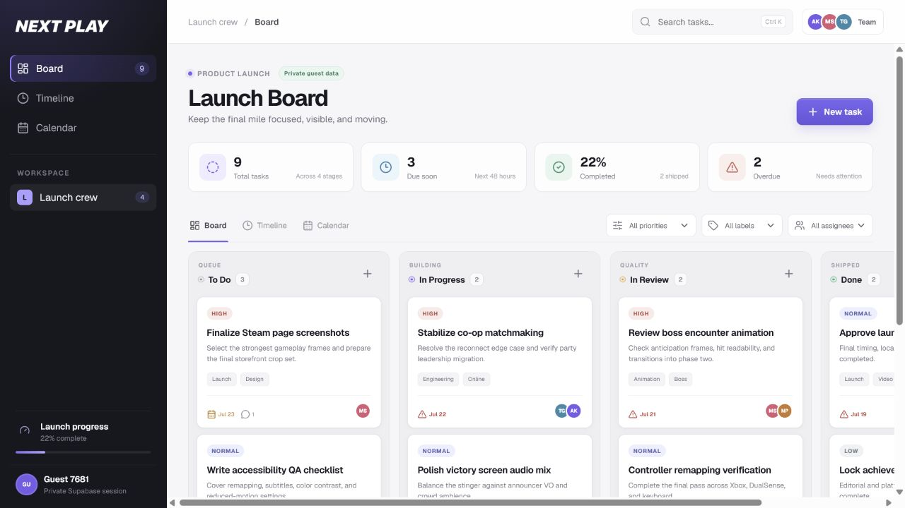

Next Play
Launch Board
A full-stack Kanban board I built for a software development assessment. It includes private guest workspaces, persistent collaboration data, and board, timeline, and calendar views.
- Supabase Auth, Postgres, and row-level security
- Cross-column drag-and-drop with persistent ordering
- Team, comments, activity, labels, search, and filters
Next.js 16
React 19
TypeScript
Supabase